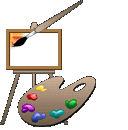
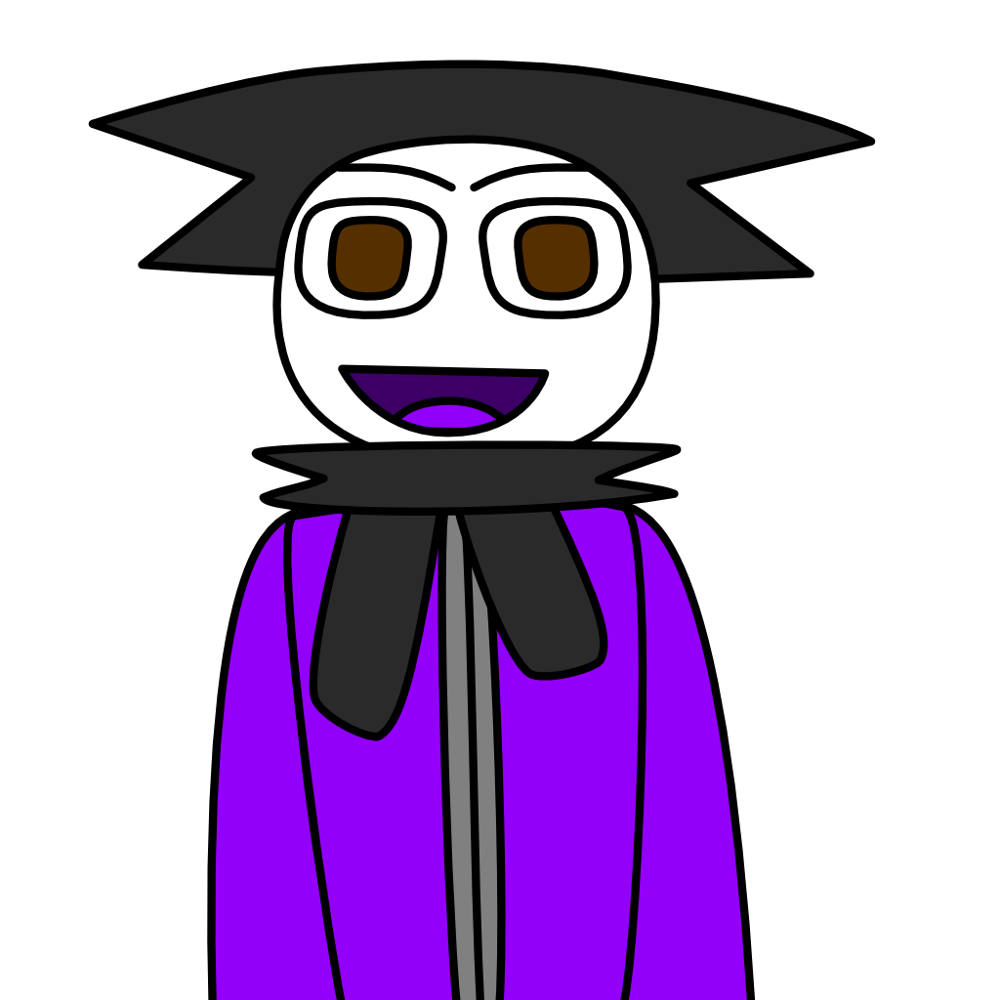
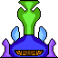
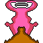
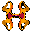
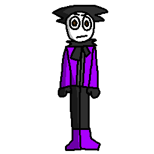
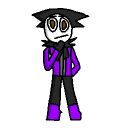
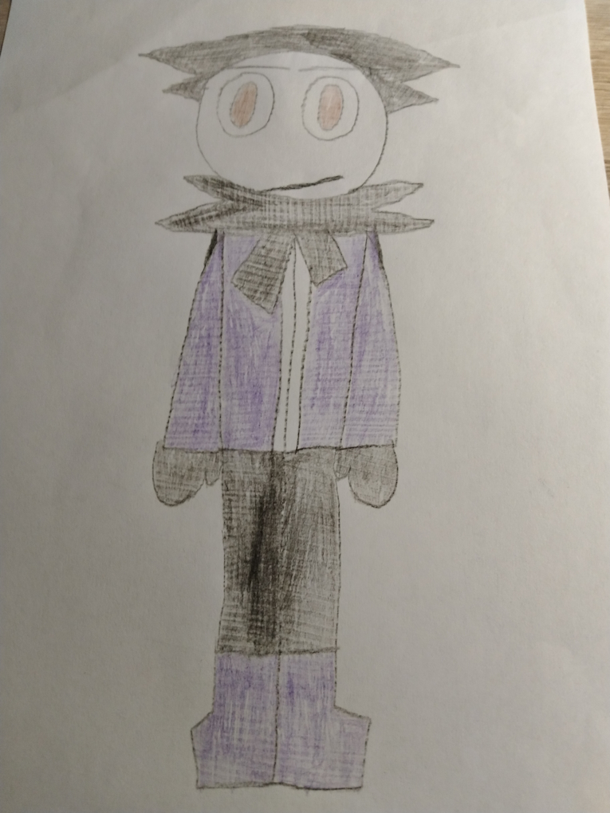

На этой странице вы можете увидеть мои лучшие рисунки. Вы можете навести курсор на них (или удержать их, если вы на мобильном устройстве, но это может не работать в некоторых браузерах), чтобы увидеть то, в какой программе они были сделаны.






")
